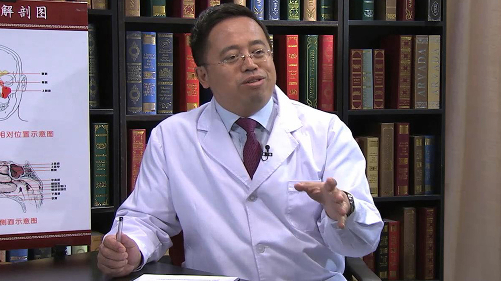

2.15 儿童鼻炎¶
谷庆隆 主任医师¶

首都儿科研究所附属儿童医院副院长 耳鼻喉科主任；
主任医师 硕士研究生导师；中华医学会儿科分会耳鼻咽喉学组副组长；中华医学会变态反应分会小儿学组副组长；中国医师学会儿科分会耳鼻咽喉学组副组长；北京医学会耳鼻咽喉头颈外科分会委员。
主要成就 ：近5年申请课题5项，发表论文30余篇。
专业特长： 擅长儿童耳鼻咽喉头颈外科的常见疾病的诊治，包括儿童过敏性鼻炎、鼻窦炎、儿童鼾症及阻塞性睡眠呼吸暂停综合征（打鼾）的诊治等。擅长儿童功能性鼻内窥镜手术、扁桃体及腺样体切除术、气管切开术、气管及食道异物取出术、支撑喉镜下的显微外科手术等。
鼻炎是怎么回事？¶
鼻炎是怎么回事？
所谓的鼻炎，咱们通俗点说，就是发生在鼻腔粘膜上的一个炎症性的疾病。
这是我们的一个鼻腔，老百姓很多人都说我鼻甲肥大，所谓的鼻甲，是人体正常的一个结构，这个是下鼻甲，这个是中鼻甲。 大多数的鼻炎发生，指是鼻甲的粘膜充血肿胀了，肿胀了之后它不就大了吗，大了之后我们鼻子就会出现一些症状。
第一个肯定是鼻腔小了，鼻子堵，还有流鼻涕，打喷嚏，鼻子发痒。 比如说过敏性鼻炎，他的鼻子痒就特别重，我们有些，或者说过敏性鼻炎鼻子痒，再一个打喷嚏就很重，但有些鼻炎的话，可能是以鼻堵为主。 而且不同的鼻炎，不同的阶段，可能是症状也略有不同，但主要症状是四大症状，我们再重复一遍：一个是鼻堵、鼻痒、流鼻涕、打喷嚏，这是鼻炎的四大症状。不同的鼻炎，不同的人可能表现的症状可能会有不同。
有人说了，我好好的为什么会得鼻炎了呢？ 这（原因）就可能不同的人体质是不一样的。 这个就是说明，为什么同样花粉来了，刺激你没事儿，刺激我就有事了呢，体质不同，可能人的反应不一样。 比如同样冷空气刺激，有的人马上就鼻子堵得不行了，有的人没有反应，大冬天穿个短袖衫都可以。为什么？体质不一样。 比如说突然降温了，很多人觉得鼻子都堵了，这就是说寒冷空气突然刺激我们，我们人体不适应，就会产生一些炎症反应，我们这个叫鼻腔里的炎症。 一般鼻腔旁边有四个窦，有上颌窦、筛窦、额窦和蝶窦，那么在鼻腔的炎症我们叫鼻炎。
我们人体不适应的刺激都可以引起我们鼻炎，鼻炎的发生率，据我个人认为，事实上没有第二个病比它发病率更高了。 为什么这么说呢？ 我们24小时要喘气，我们各种各样的刺激，人体不适应的刺激，都会引起我鼻粘膜的炎症。 比如说最简单来说，病毒、细菌，寒冷的空气，包括那种人体不适应的各种化学刺激，还有污染的空气的刺激，都会引起我们鼻粘膜的炎症。 这些不同的刺激引起的炎症，症状是相似的，但是也是有区别的，比如说过敏性鼻炎，可能很多人有过敏性鼻炎之后，鼻子痒的就很厉害，打喷嚏会很厉害的。
据我所知，我们大多数的疾病发生率，都是按什么万分之几，千分之几，而我们鼻炎的发病率是按百分之几来计算的。 因为现在确切的说，到底发生率是多少，各个国家统计是不一样的，但是很多国家的发生率达到40%到50%，那这个概念是很可怕了，人群中这么大的人群都是这样的。
鼻炎和鼻窦炎是一回事吗？¶
鼻炎和鼻窦炎是一回事吗？
很多家长都来问，说我们孩子流鼻涕了，说鼻炎还是鼻窦炎，其实在他的脑子当中，这个概念是非常混淆的。
我们先从解剖上看，我们这么看的话，这个叫鼻腔里发生的炎症，叫鼻炎，那么鼻炎往外扩展，到了鼻窦里边去了，那叫鼻窦炎。 我经常说一句话，我说我们家水池漏水了，那水池里头叫鼻炎，漏到水池外面了，叫鼻窦炎。 鼻窦炎和鼻炎哪个重，其实我不解释大家也能很清楚了，鼻窦炎症状是比鼻炎要重的，是不是。
但是这里有一个问题，大多数人有了鼻窦炎的时候，一般都有鼻炎，很难说我们发生了鼻窦炎，而鼻腔特别好，那很难这样的，但是鼻炎不一定是（有）鼻窦炎。
为什么说我们有的时候鼻炎要治疗呢？ 鼻炎控制不好，最容易引起的并发症就是鼻窦炎，而鼻窦炎的表现就会比较重了，比如说有的人头疼，有的人还会发烧、脓鼻涕，引起的症状比别人要严重多了。 如果说这个孩子，一直流大黄绿鼻涕，那可能就不是鼻炎了，有可能就是鼻窦发炎了。 这时候可能要分清，而且黄绿鼻涕一包一包的擤，如果可能这时候我们单纯按鼻炎治疗，有时候效果可能就不好。
鼻炎分为哪些类型？¶
鼻炎分为哪些类型？
鼻炎现在是这样的，按照大类来分，主要是分两大类：一个是过敏性的，比如说过敏原刺激引起的，我们打喷嚏、鼻堵、鼻痒这样的一个症状；还有一大类是非过敏性的。 但是在儿童来说，我们还有一大类，叫感染性鼻炎。
正常的儿童，特别小婴儿，一年感冒个五六次，四五次是正常的，而这些孩子感冒之后，首先出现的症状是什么，流鼻涕、打喷嚏、鼻子堵，这样的一些症状，其实这也就叫感染性的鼻炎，因此儿童还分了一大类感染性的一个鼻炎。
按时间来分的，比如说一般来说，七到十天之内的鼻炎叫急性鼻炎，反之就是慢性鼻炎。 但实际上来说，我们所说的急性鼻炎和慢性鼻炎，主要是指由于病毒或者细菌感染刺激来的这一部分鼻炎，比如说我们一般的感冒七到十天就好了，七到十天好了之后，鼻炎就没有了，这就是急性鼻炎。 有的人感冒好了之后，鼻炎症状还存在，迁延不愈，那就是慢性鼻炎了，这是按时间和不同的刺激，这么分类的。
儿童的慢性咳嗽也可能和鼻炎有关系吗？¶
儿童的慢性咳嗽也可能和鼻炎有关系吗？
因为一般来说，刺激鼻黏膜之后，就像我们手扎一针都会疼一样的，那刺激鼻黏膜也会有共性的一些症状，一般来说，都是有鼻子痒、打喷嚏、鼻子堵和流鼻涕。
当然了，儿童的鼻炎还有一些其它的特点，很多儿童的咳嗽可能都是由于鼻炎引起来的。 就是说我们很多家长来看病的时候，说孩子咳嗽一直不好，医生建议你看看耳鼻喉科是不是有鼻炎了，家长说我们咳嗽和鼻炎有什么关系呢？ 说明我们很多人对这个咳嗽和鼻炎的关系还理解得很模糊。其实儿童当中，有统计，儿童的慢性咳嗽当中，大概40%到50%都是由鼻炎控制不好引起来的。
换句话说，我们要改变很多观念： 就是我们原来很多人认为感冒不好，或者认为孩子气管炎一直不好，很可能根本就不是这些事，不是这个问题，有可能问题的关键是鼻炎。 那过一段时间之后，比如我们用的一些抗生素，或者用的一些其它的一些药物，有可能也把鼻炎治好了，所以最后所谓的支气管炎也就好了。
我们应该这么理解，鼻腔是呼吸道的第一道门户，就是说它是我们家的第一道大门，它起的一个加湿加温和过滤空气的作用。 如果鼻腔这个呼吸道第一道门户如果守不好，对我们影响是很大的。 这也就是为什么现在大家都非常关心鼻炎，但他不知道关心鼻炎目的是什么，目的是在于守好我们第一道防线。
儿童过敏性鼻炎有哪些特点？¶
儿童过敏性鼻炎有哪些特点？
其实过敏性鼻炎，现在是关注度最高的一个鼻炎，因为它发病率是不断在上升的。 现在以北京地区为例，现在统计好像都达到10%左右这么一个发病率的高峰了。
过敏性鼻炎一个最大的特点就是鼻痒会特别重，特别小孩这么蹭鼻子，打喷嚏、喷嚏连天，这样一个症状。
还有一个很重要的特点，就是我们看病的时候能看到，有的孩子，因为总那么搓鼻子，有的家长会说孩子是不是最近有点抽动症，总这么搓鼻子。这不是（抽动症）。再有的孩子总那么搓鼻子，最后形成一个皱褶。
而重要的一点，很多孩子过敏性鼻炎之后，下眼袋是发黑的，我们很多小孩应该是水汪汪的眼睛的，下眼袋是没有的，他有一个黑色的下眼袋，这就是过敏性的一个黑眼圈，这么一个表现。
有的孩子来看病，他往那儿一坐，我说这孩子是不是流鼻涕打喷嚏，家长很奇怪，说大夫怎么这么神奇，因为我们一看就看出来了已经。再一个，儿童过敏性鼻炎之后，他鼻堵也很重，而且一个重要的是，儿童过敏性鼻炎，伴发咳嗽的发生率，有的统计达到60%多，这个是很高的。
所以说儿童过敏性鼻炎，现在是格外的受到了一个重视，而且我们还知道，儿童过敏性鼻炎控制不好，它会引起临近器官的一些症状，比如说哮喘，它和哮喘的关系也是非常密切的。 现在WHO组织，它已经把过敏性鼻炎和哮喘定为同一疾病了，控制不好过敏性鼻炎，是很难控制好哮喘的。
如何区分儿童过敏性鼻炎和感冒？¶
如何区分儿童过敏性鼻炎和感冒？
其实儿童过敏性鼻炎和感冒，特别容易混淆。 有的（家长带）孩子来看病，第一句话就说：大夫，我们家孩子感冒得一个多月了…… 我马上打断她，我说你主诉就有问题，感冒没有一个月的，应该说你家孩子流鼻涕，鼻子不通气有一个多月了，应该这么说。
这说明很多家长把这个（感冒与过敏性鼻炎）混淆在一块了。 我们有过一个相关的调查，大概50%左右的人，他把过敏性鼻炎和感冒根本是混淆在一块的，就是把过敏性鼻炎当感冒来治疗了，甚至有40%多的人是用抗生素。
我们也见过这样的家长，我说你这孩子不是感冒，是鼻炎，他马上来了一句，那我也吃消炎药了，消炎药头孢，怎么也能治过敏性鼻炎，那说明他根本不了解，头孢我们只能杀细菌，根本杀不了过敏性鼻炎。
那么过敏性鼻炎和感冒怎么区别呢？
首先来说，一般感冒只有七到十天，而过敏性鼻炎，它的症状，可能会持续很久，而且是在每年的相同的时间内，可能会出现，有的会持续几个月，就这样一个概念。 过敏性鼻炎的鼻涕，一般都是清水样鼻涕的，而感冒早期可能是清鼻涕的，到六七天之后可能是浊鼻涕，就是黄鼻涕了，然后慢慢就好了，这是感冒的病程。
第二个，过敏性鼻炎，它是一般是没有发烧这些症状的。 而我们感冒，特别是小孩，一旦感冒之后，马上就蔫了，老百姓的话说，一发烧，或者不发烧，躺在床上也不愿意动了，这时候就要有个全身的症状，比如萎靡不振，不愿意吃东西，厌食这样的表现。 而过敏性鼻炎，家长说没啥表现，该吃吃，该喝喝，就是过敏性鼻炎的表现。 而且过敏性鼻炎来说，如果仔细查能找到过敏原的，而感冒是找不到了。
而且还有一点就是，我们吃常规的感冒药，对过敏性鼻炎的效果是很弱的。 这里强调一点，也不是一点效果没有，为什么呢？ 就是我们很多的感冒药里头，也有一些抗过敏的成分，只不过量偏低而已。
孩子鼻子出现哪些症状就要考虑可能不是鼻炎了？要与哪些疾病区分开？¶
孩子鼻子出现哪些症状就要考虑可能不是鼻炎了？要与哪些疾病区分开？
因为现在很多家长，喜欢上网上一搜搜，看我们家孩子是不是鼻炎，因此来说，我们一定要给他几个重要的建议：
第一点是这样的，如果说你家孩子是单侧的鼻堵，那就要考虑可能不是鼻炎了。 我们鼻炎发生，一般都是说这个鼻子发炎，这个鼻子不发炎的可能性是比较小的，要发炎是两个鼻子都发炎。 如果只是单侧鼻堵，我们要考虑第一点，孩子往鼻腔里塞没塞东西，叫鼻腔异物，第二点，鼻腔内长没长东西，这个要区分开。
第二，有的孩子比如说鼻出血，那肯定就要考虑是不是别的问题了。
第三点，有的孩子比如说白天鼻子不堵，睡觉的时候鼻子堵得很厉害，打呼噜，张着嘴，憋气，是另一个现在家长非常关心的疾病，叫做腺样体肥大。 这个病它的特点是，白天症状很轻，睡着了之后就开始打呼噜，憋气了，所以这个可能要区分开。
再一个就是我们如果流鼻涕流的黄鼻涕特别多，就要和鼻窦炎相鉴别。 鼻窦炎，它是和鼻炎，有的时候是能区分，有的时候可能需要一些特殊检查来进行鉴别的，但是鼻窦炎，它的症状会比鼻炎要重，如果说黄鼻涕特别多的情况下，我们可能要考虑有了鼻窦炎这样一个症状了。
确诊儿童鼻炎还需要做哪些检查吗？¶
确诊儿童鼻炎还需要做哪些检查吗？
这个确诊其实是两大块： 第一大块是和一些其它的疾病，就是鼻炎和非鼻炎相鉴别； 第二块是鼻炎和鼻窦炎的鉴别。
比如说鼻炎，一般来说，我们一个小孩，我们不太建议做过多的检查。 一般来说，我们大夫通过前鼻镜的检查看看，大致区分是不是鼻炎。 然后比如有的孩子黄鼻涕特别特别多，我们这个时候，我们怀疑他是鼻窦炎。
我们如果想确诊，必要的情况下，我们可以给他做个CT等等。 但是实际上来说，如果说大夫经验很丰富，我们也不建议每个孩子怀疑鼻窦炎都做CT的。
再一个有的孩子如果怀疑有腺样体肥大了，我们可能需要给他做一个内科镜检查，或者拍一个片子，来进行鉴别。
如果说孩子肯定是鼻炎了，我们想知道他是哪一类的鼻炎，这个时候我们可能需要做一个过敏原的一个检测。 通过过敏原的检测，我们知道这孩子是过敏性的和非过敏性的。 比如这孩子家长说了，他就打喷嚏、流鼻涕，每年一到五月份花一开，就开始出现了，那我们考虑，那他是不是过敏性鼻炎。
过敏原一般是有两大类现在，一个是体外测，一个是体内测。 体外的话，就是说把他血抽出来，做化验，那个比较定量的一种，这个一般和孩子吃不吃药，受身体影响比较小。 还有一种体内，就是在身上做皮肤检测，扎针这种的。 这个我们一般要求比较严格： 就是孩子第一个需要配合； 体质不能过分敏感，比如有的孩子皮肤一划痕就红那种，可能就要控制； 第三个从药物的影响比较大，比如你现在吃的抗过敏的药，可能会影响测试的结果。
儿童鼻炎不及时治疗危害也很大吗？¶
儿童鼻炎不及时治疗危害也很大吗？
儿童的鼻炎，如果治疗不及时的话，对人体的危害还是很大的. 但讲这个危害之前，我先强调一点，我们家长不要危言耸听，不能因为看我们这个视频之后，觉得这个孩子一得鼻炎太严重了，我不治好我就有点心病了，这样是我们不太赞同的，就是说我们有点鼻炎，其实也不可怕。
不及时治疗之后，可能会出现一些问题，比如说你孩子有鼻炎，如果控制不好，可能会引起咳嗽. 这个家长就接受不了，慢性咳嗽，而且我们很多鼻炎，包括一般的我们过敏性和非过敏性鼻炎，对我们的哮喘都是有影响的。
再一个就是说，有的孩子，比如说流鼻涕之后，过了几天之后，耳朵疼了。为什么？中耳炎。 而且这里头强调一点，就是很多孩子实际上是因为什么来看的呢，是因为一直咳嗽，一直按支气管炎或者感冒来治，或者一直不好，后来突然耳朵疼了，到耳鼻喉科一看，是中耳炎，这时候你再告诉他是因为鼻炎没控制好引起来的。
再一个，我们从解剖也能看出来，鼻腔最外面不是鼻窦吗，鼻炎控制不好，那会引起鼻窦炎。 引起鼻窦炎之后，治疗比鼻炎要复杂多了，这是一个问题。
鼻炎危害这一范畴里边的，就是说因为你鼻子堵之后，你睡觉可能就会鼻子不通气，有的孩子可能就会产生憋气的一些症状，张口呼吸，但张口呼吸鼻阻力是增大的，有的孩子可能张口呼吸他也喘不上气，这时候就会出现憋气，我们说大脑是最怕缺氧的，所以说长期有的时候你大脑供氧不足，就会引起我们的一些孩子的一些，比如说性格的改变，智力的一些改变，性格比如说就是说有的孩子多动，好激惹，就是稍稍家长跟他说点什么，马上情绪特别容易激动，再一个是记忆力减退，这都会引起来的。 当然我还是强调一点，我说的是严重鼻堵，引起的呼吸不畅的情况下，不是说我今天得个鼻炎，明天孩子就变傻了，这么认为，我觉得这个就有问题了。
再一个就是我们知道我们鼻炎如果控制不好的话，我们一般鼻子堵，鼻子堵就张口呼吸，长期的张口呼吸，它会引起我们面容的改变的。 实际上人体它是一个非常精密的仪器，我们在生长过程当中，闭着嘴，它是上牙叩下牙，它是这样一个结构，就是说上牙叩下牙，这样有什么好处呢，就是我们下牙支撑着上牙往前长，让你的上唇往前生长，同时上牙这么抑制着下牙，让你的下颌别过分的往前伸。 但如果我们一直开着颌状态下，上牙没有刺激，上唇就会短小，下面的牙齿就过度生长，而有的人舌体还肥大，总伸着舌头，他会有一个面容，我们有的时候叫腺样体面容，其实腺样体面容，不是说腺样体肥大单纯导致，各种张口呼吸都会引起这样一个问题。
其实我们有的时候在坐公交车的时候，一看这个孩子吧，就想跟他妈妈说，赶快治治鼻炎吧，你看脸都改变了，但又怕人家说你是个大骗子，其实这样的时候，职业病，一看就知道这孩子是长期鼻炎。
儿童鼻炎如何治疗？¶
儿童鼻炎如何治疗？
其实任何疾病（的治疗），我们先从病因来找（原因）。 如果说你的鼻炎来了之后，是因为你的孩子体质比较弱，因此来说我们可以告诫家长，其实要增强孩子的体质。如果是过敏性鼻炎来的话，我们会告诫家长，尽可能要远离过敏原。 其实要根据孩子的症状给予相应的治疗。
现在来说，儿童（鼻炎）还是主要以保守治疗为主，尽可能少用手术的治疗方案，但也有个别方案需要手术的。
我们先说药物治疗这块，如果说从用药方式来说，有局部用药和全身用药。
局部用药来说，顾名思义，就是往鼻腔里局部给药。 这一部分现在有那种局部喷的那种激素类的，还有一些减充血剂的。 激素类的就是抗炎的效果比较强大一些，但它的一个特点就是作用没有那么快，一般最快的一两个小时才起效，但它的优点就是对各个症状都有效，比如打喷嚏、鼻堵、鼻痒、流涕都有效。 还有一大类是，喷进去让鼻子能够通气的，这个就是减充血剂，这一类用了之后，孩子会很快通气的。 有的时候我们会交替两个或者是混到一起用的，一般来说，鼻用的激素因为它起效慢，建议时间一定要用的长一点，一般来说三到四周以上，而那个减充血剂，一般是在一周以内。
而第二大类是口服，口服的现在第一大类就是抗过敏的药，我们叫抗组胺的药，这一大类现在有一代、二代、三代的，就是说它能迅速控制孩子打喷嚏、鼻子痒、流鼻涕的症状，但是对鼻堵的效果偏弱一些，这个要知道。 当然了，儿童也有一些口服的减充血药，叫伪麻黄碱之类的，但是这一类药还是要少用为主，还有一些其它的抗白三烯的药物，还有等等等等这样的。
最主要的根据孩子不同的症状来应用不同的药物，比如打喷嚏为主，我们可能吃点抗过敏的药，如果有一些长期的病人，我们可能会建议用局部用药可能会更好一点。
但有的孩子，比如说有严重的鼻中隔偏曲，或者有的孩子他有腺样体肥大，我们可能会建议他手术治疗，有的孩子或者长了鼻息肉，我们会建议他手术治疗。 那么一个单纯的鼻炎，比如说只是鼻甲肥大，只是这一块肥大了，我们给他用手术治疗，儿童来说，我们还是比较慎重一些的。
儿童鼻炎使用激素治疗副作用大吗？¶
儿童鼻炎使用激素治疗副作用大吗？
其实现在很多家长，都有一个谈激素色变这么一个感觉，他自己用都很害怕，一想孩子这么小，能用激素吗，他考虑到了，其实医生和药厂也都考虑到了。
就是说首先有一点，任何药都是有副作用的，就是如果一个药品，它说无副作用，只要见到这几个字，那这个药我们就不要信了，而第二个鼻用激素，不是口服激素，为什么要鼻用激素，不口服呢，就是为了减少它的副作用，这是第一个。
鼻用激素一点副作用没有，那不是的，但是一般来说，我个人认为，现在市面上通用这些鼻用激素，一般都是国家食品药物监督管理局批准的这么一个药品，一般是安全的，在医生的允许范围内，一般来说用一个月是安全的。
但是有的孩子鼻炎会长期存在，这个时候怎么办？ 我们会让他阶梯减药，比如原来正常量是一天一个鼻孔喷一下或者两下，逐渐在症状改善的时候，可以减到一个鼻孔喷一下，到后期可以今天只喷左，明天只喷右。
我们的目的就是尽可能减少用量，来减少孩子的副作用，有的激素的副作用，什么满月脸，水牛背，孩子会发胖等等这样的问题，会影响生长发育等等这样的问题，国外也有做过相应的试验。
记住最后一句话，是药三分毒，但是在合理应用范围内，一般是比较安全的。
为什么儿童鼻炎采用手术治疗时要慎重为好？¶
为什么儿童鼻炎的采用手术治疗时要慎重？
其实激光（治疗）也好，还是其它方式（治疗）也好，我们都可以归结为手术治疗这块。
说到鼻炎手术，先讲一下解剖结构，这是鼻甲，鼻甲肥大了，肥大了之后，我们用激光也好，还是用刀也好，还是用现在所谓的各种新式的方法，（包括）等离子的（方式）等等，目的是把它变小。 比如说我们一片平坦的草地上，突然鼓了一个小包，这个小包影响我们现在的正常的环境，反正对我们影响很大的时候，我们想给去平它。 去平它就有几种方式，去小包很简单，拿铲子铲平了，铲平了之后，草地平不平，平了，但这里有一个问题，草还有没有了。
那么我们鼻腔粘膜表面是有纤毛的，还有很多一些腺体，这些就相当于草地上的草似的，如果草地上没有草，沙化了，那我们有的时候很难恢复的，所以这就是原来用刀来做手术，可能就这个目的。
后来说我们用激光来做手术，也是通过，用热能量这么划，最后也是包变小，但它也是破坏了“草坪”了。 现在有一种（方式）——用等离子灯。等离子灯是什么呢？ 把这个东西相当于是铲到“草坪”底下去，把那小包挖光了，然后把那“草坪”按下去，草又平了，是这么个目的。 但是现在这是从理论上来说，那这种方式是不是对孩子影响就比较小了，但实际上是这样，因为人体是个非常复杂的器官，理论和实际，毕竟不完全一回事。
我现在强调一点，在孩子比如说鼻甲肥厚特别严重的情况下，可以偶尔用手术。 但是一定要慎重，而如果用的话，尽可能微创，就像我说的，不要破坏了“草坪”。
儿童过敏性鼻炎脱敏治疗是怎么回事？¶
儿童过敏性鼻炎脱敏治疗是怎么回事？
我们先举一个简单的例子，比如有的人一喝酒就醉得不行了，于是乎把这酒稀释成一万倍，让他先喝这个稀释成一万倍的酒，他喝完之后有一点点轻微的反应，但是肯定不会醉倒的，然后再逐渐加量，让他最后能喝半斤不醉，这个就叫脱敏疗法。 但是这里头有一个问题，你给他酒的速度太快了，今天喝万分之一的，明天就喝千分之一的，后天就喝百分之一的，一周就会变成原浆，能行吗？那肯定不行。 但是如果再换个角度来说，你今天喝万分之一的，一年还喝万分之一的，你觉得这个脱敏能达到效果吗？也不行，因为浓度的逐渐提高，时间逐渐提高。
而脱敏也是这样的，比如说我们对一个粉尘螨过敏，过敏给稀释成多少倍之后，然后缓慢的逐渐让你适应，通过一段时间之后，就让你身体对这个东西不再过敏了，而它的目的，就是让你完全的适应这种东西。 换句话说，这是唯一一个有可能去根的方式。 我用了几个词，第一个是“唯一”，第二是“有可能”，不是一定的。 就像刚才举的例子，有的人你怎么让他适应这个酒，他可能最后他也喝不了这个酒，这个和体质是有关系的。
脱敏有一些要求的。 在你身体特别不好的情况下，我们肯定不建议你马上脱敏。 比如说你现在已经有严重的哮喘了，正在发作期，这时候本身已经发作了，我再让你马上脱敏，可能是不适合的。原来脱敏是指的，就是症状控制不好的鼻炎才允许用，现在是只要合适，都可以采用这种脱敏治疗。
就是我们现在国内市场上的脱敏治疗，现在主要应用的是粉尘螨，就是我们现在这么多过敏，比如你花粉，花粉又分为好多，蒿草，又可能绿草等等这样的。 我们现在脱（敏）的比较成型的，标准过敏原就是粉尘螨。我们可能很多国内的很多有一些大的知名医院，他们自己脱敏脱的非常好，他们用自己制定的一些过敏原，后来因为国家要统一，就是这个东西必须符合国家的标准化，现在来说就是不断的，把这些标准化之后才能上市，经过临床试验。 现在用最多的就是粉尘螨，很快就是户尘螨，国内很知名的一些变态反应科，他们自己产的一些东西，上市之后，比如说过一段时间，可能我们就能脱蒿草的，绿草的等等可能都会脱，但这个东西我们现在要求的是要用标准的过敏原，标准的脱敏剂。
脱敏治疗，它是唯一一个有可能改变（过敏性）鼻炎的病程的这么一个治疗方式，因此来说它需要有个时间，这个时间我们一般要求是在两年以上，太短了肯定也不行。 脱敏治疗，一般先用最低的浓度先用一周，然后再换成2号、3号、4号，到了一定阶段之后，我就靠这量再维持一段时间，一般是两年，有的甚至更长一些时间，如果说有的人说我脱了半年就停药，那肯定是没有效果的。
比如说有的人说，我在脱敏期间，我感冒了，我脱敏期间我过敏性鼻炎现在又犯了，犯得很重的时候，怎么办？ 我们现在建议是这样的，你在这个时候脱敏药物不要停，你只需要加一些其它对症的药物，你加一些治疗过敏性鼻炎的药物就可以了。 这里头除非你出现了一些脱敏的一些副反应，这时候才能停药。现在也有一种叫快速的疗法，一般在半年之内，我们过敏原一般不分1号、2号、3号、4号、5号吗，在短的时间内，马上就升到4号之后，然后再用5号维持，它的目的是让病人缩短时间，同时有一些脱敏，比如说需要打针这种，为了减少病人到医院的次数，但是就是说，任何方法都有它的优点和缺点，我们比如说缓慢的脱敏，它的安全性可能是要更好一些的。
感冒会加重鼻炎症状吗？¶
感冒会加重鼻炎症状吗？
这里头我们先强调一个概念，就是感冒。 感冒实际上就是按耳鼻喉科说，是由于病毒感染而引起的鼻炎，急性鼻炎。 因此来说感冒本身也是鼻炎，它是叫急性鼻炎。
当然感冒还会有其它症状，比如说有嗓子疼，或者全身不适，那是全身症状，在鼻腔，也就是表现为鼻堵，流鼻涕等等这样的症状，如果广义来说，感冒就是鼻炎。
第二个问题，感冒会导致鼻炎加重吗？ 我们举一个例子，比如说我过敏性鼻炎，本来就经常打喷嚏，打得很重的时候，昨晚又感冒了，那这个时候我鼻堵肯定会加重了，它也会引起打喷嚏，这时候你的鼻炎肯定会加重。
这时候在治疗上我们会怎么办呢？ 就是说进一步加大我们的一些对症的治疗药物，比如我现在鼻堵的非常重了，我原来只用了一个喷鼻的喷了一下，现在还控制不住，我可以喷两下，原来我流鼻涕不是很严重，我现在打喷嚏流鼻涕特别重，我可能会把抗过敏的药物再加一些量，根据不同的症状来加不同的药物，最后症状改善之后，再及时的减少药物。
孩子得了鼻炎家长应如何护理？¶
孩子得了鼻炎家长应如何护理？
很多家长来看病的时候都会问我们这样一个问题：大夫，你告诉我们，怎么样能让孩子不得鼻炎？ 我说：鼻炎其实是你全身体质在鼻腔的一个表现。
比如说你这个孩子体质，就是一遇冷空气刺激，孩子就容易感冒，或者天气变凉就容易感冒，这第一表现，就是鼻子会出现鼻炎的一个表现，因此来说第一项任务，还是建议是一定要增加孩子的体质。
第二个问题，其实我们有时候跟家长也说，孩子得了鼻炎，其实也不一定是坏事，我们最近可能身体需要提高警惕了，如果说你提高了警惕，你可能就不会往下走了。 比如今天孩子鼻子堵了，如果说我流鼻涕了，你不当回事，没准明天就咳嗽了，后天可能支气管炎了，有的过敏性鼻炎的孩子，今天鼻子出现症状了，如果说你不控制，过两天可能哮喘就发作了。我们有的时候，有一些鼻腔的一些表现，其实人体给你提示的一个警钟，我们要重视这些症状，这个是很重要的。
第二，我们在生活上，如何注意这块，我觉得从饮食上来说，我们现在老生常谈了，绿色蔬菜，平衡膳食，这都很重要的，多吃水果，是这样的；第二是加强运动，只有提高体质，才是最重要的。
第三个，因为有的孩子，你看他不能接受任何刺激，那我们扩大对他的刺激，比如说我们可以用冷水洗洗脸，热水泡泡脚，这都很重要。
这里头我还要谈一点，就是我们现在的孩子，因为生活环境和三十年前、四十年前，有明显的不一样了，冬天有暖气，夏天有空调，我们孩子适应谱现在越来越窄了。 我们古语有句话叫冬天三九，夏练三伏，目的是什么，这对强壮我们的体魄有很大的一个帮助的。 但现在的孩子，冬天一冷，马上家长把大衣盖上，进屋就有暖气了，夏天马上就有空调了，他适应谱特别的窄，因此稍稍超出一点适应谱的范围之外，他马上就出现问题了，所以这一点要引起我们家长的一个重视。 就是说老百姓有一句话叫春捂秋冻，秋天要适当的冻一冻，就是这个道理，让你多适应适应，夏天有的时候也是，你就应该被热一热，冬天其实也适当被冻一冻，这是很重要的。
鼻腔冲洗对儿童鼻炎治疗有好处吗？¶
鼻腔冲洗对儿童鼻炎治疗有好处吗？
现在洗鼻子，你在网上一搜，应该是特别火，那点击量是非常大的，洗鼻子有什么好处呢？ 我以过敏性鼻炎为例，比如你现在在每个单位面积内，比如说有一个过敏原你会打喷嚏，你现在正好有一百一十个，我通过洗鼻子，给你洗掉二十个，这个时候你剩九十个，有可能就不打喷嚏了，是不是这样一个概念。
但是这里头，通过洗鼻子，我们要知道一点，它只是一个重要的辅助措施，或者它不是一个绝对的一个治疗方式，这个一定要明确。
现在洗鼻子有各种各样的方式，有局部喷的，有雾化的，还有冲洗的这种，我觉得不同的孩子，要选用不同的方式。 那有的小婴儿的话，拿那个灌洗的冲洗的那种，很容易呛着。 我们有那种从这个鼻孔进，这个鼻孔出那种，一般是在六岁以上的孩子才可以用，而且那种的话，是鼻窦炎的效果会更好一点。 对于小婴儿，比如说鼻子堵，没有药可用的时候，我们可以用那种喷剂，稍喷一点，有的孩子如果鼻炎长期犯，我们可以加点药物，可以用雾化治疗，用喷雾那种等等。
如何预防儿童鼻炎反复发作？¶
如何预防儿童鼻炎反复发作？
任何病要想说根怎么去，那就得找病因。比如说你一个鼻炎怎么发作，先看它什么鼻炎。
如果是一个过敏性鼻炎的话，举个例子，这个小朋友对花粉的过敏，他妈妈总领他去花园，一见花，他突然打喷嚏流鼻涕，那肯定是不对了。因此来说，如果是过敏性鼻炎，我们第一要务，就是要尽可能的回避过敏原。 那么回避不了怎么办？我们规律用药。 有的孩子，用了药说很好，家长说大夫用药很好，但是就是一停药就犯，这说明用药不规律。我们要有的时候，在不得不跟过敏原共处一个环境的情况下，你只能用药控制，用药控制之后，不叫真正的没症状了，是因为用药在顶着，或者用药在帮你控制。那这个时候呢，你可以药慢慢往下减，而不是停药，这是过敏性鼻炎。
如果说孩子是一个其它（类型的鼻炎），比如说感染性鼻炎，感染性鼻炎简单的说，它是由于病毒或者细菌刺激引起来的。 那么这里头，和孩子一个体质有关系，和体质有关系的话，这里就要增强体质是很重要的。 孩子通过去幼儿园，今天同样天气降温了，他怎么没事，这个孩子怎么就有事了呢？这个可能是体质，这个体质就是多种因素了，包括喂养，包括护理等等是这样一些问题。那肯定是不同的孩子，不同样的。
再一个就是说，所有的鼻炎都一样，我们要从规律的饮食，规律的生活习惯，这都很重要的。
儿童鼻炎能根治吗？¶
儿童鼻炎能根治吗？
这个问题我几乎从门诊上每天都会被问到。 我一般会先回答这么一个问题，我就说感冒能根治吗？ 感冒这次是能治好的，但下次能不能犯的，是能犯的，鼻炎也是。
比如说你过敏性鼻炎到我这儿来了，我这次我帮你控制好症状，但下次过敏原再出现的时候，你还会犯的。 因此来说能不能根治这个问题，就是还是看引起发病的这个主因能不能真正的去除。 那么比如说过敏性鼻炎，你对一个什么过敏，正好能被脱敏掉，那是肯定能根治的；如果说你能够通过你的一些积极的一些锻炼，或者说你换了一个城市，那可能也会根治掉。
因此来说，我个人认为，要分门别类，如果积极应对，有些鼻炎，或者很多鼻炎是应该能够根治，现在我们任何词都是相对的，用根治这个概念，可能不太好说。
儿童鼻炎长大后会自愈吗？¶
儿童鼻炎长大后会自愈吗？
这种说法是这样的，首先我并不反对这种说法。 因为现在，第一个来说，很多人来看病，孩子就每天早上打俩喷嚏，流鼻涕也不重，睡觉也能闭上嘴呼吸，家长就积极的看病，看了一天又一天，每周都领孩子来看病——这种孩子我就会跟他说一句话，我说你小的时候，你作为小伙伴，是不是天天流鼻涕很多，长大之后，你看周围的小伙伴，还有几个流鼻涕的，肯定是少了。 为什么呢？ 就是说你长大之后，你的体质增强了，你鼻炎就会好了很多，因此网上这个说法也是对的。
但是要有一点，成年人得鼻炎的发病率是很高，就因为小时候不及时的治疗。 不是说所有的鼻炎都这样，我们如果鼻炎症状很重了，天天流鼻涕已经会引起咳嗽了，或者是天天睡觉都憋气了，就是说这里总结一下，一句话就是说，影响了我们孩子正常的生活和学习的鼻炎，肯定是需要积极治疗的。 否则的话，可能会引起一系列的并发症，比如说成年的慢性鼻炎，很多时候是小时候没治好，而且许多成人的慢性鼻窦炎，就是小时候得到的，小时候没控制好才引起来的。
所以，什么事情是相对的，我们要强调一点，什么事情适度，一定要适度，不是说我讲鼻炎，鼻炎就是最重要的，不治疗鼻炎，天会塌下来的，肯定不是这样的，也不是说讲完就告诉你，鼻炎随便吧，不用管了，肯定不能这么说。
儿童鼻炎患者如何正确擤鼻涕？¶
儿童鼻炎患者如何正确擤鼻涕？
这个应该是老生常谈了，就是我们来看病的时候，很多家长拿着这俩手，你擤，孩子就擤鼻涕。 其实首先来说，我们很多场合说了，擤鼻涕是很重要一个环节，因为鼻的后面和后鼻孔是通的，我们擤的时候，是按住一个鼻孔，通过这时候，软腭顶到上牙膛之后，把那个鼻咽腔给封住，这时候再一擤的时候，从前面鼻涕出来了。 因此按一个鼻子擤一个鼻涕，不要俩（鼻孔）一起按。
我们很多孩子得中耳炎，就是因为擤鼻涕不正确，两个手一直按着鼻子，最后一擤，鼻涕没地儿出，因为我们知道，就是鼻腔后面，旁边有个咽鼓管咽口，就是和中耳相通的，这么一擤，也擤到中耳腔里面去了，就会引起急性中耳炎，就是鼻炎是引起急性中耳炎的一个最重要的方式。
鼻炎会传染吗？会遗传吗？¶
鼻炎会传染吗？会遗传吗？
这个一定要分门别类，广义的鼻炎是包括感冒的，而感冒一般是由于病毒感染引起来的，这个时候是传染的。 因此来说，比如说这个孩子感冒了之后，除了鼻子堵，流鼻涕之外，还浑身发热，这个时候我们可能要给他要隔离。
我们也经常看到是这样的，有的来看病，说我们家孩子他保姆有鼻炎，天天鼻子不通气，是不是会传染给我们家孩子？ 我说这种慢性鼻炎是不会传染的。
他爸爸有过敏性鼻炎，是不是会传染给孩子？ 我说这个也不会传染的，过敏性鼻炎，不是他爸爸传染给他的，是他爸爸遗传给他的。
鼻炎遗传还挺明显，现在有一个数据统计，如果是妈妈有过敏性鼻炎，遗传率大概是50%左右，如果是爸爸有的话，是25%左右。 特别是很多孩子的妈妈说我原来没鼻炎，说我自从怀孕之后，我就流鼻涕打喷嚏，结果这孩子出生之后，过了不久，真的也是出现这个症状，那是遗传过去的。 所以说这个遗传概率还很高。但是这个东西是这样的，其实我们现在随着医学的发展，我们可能会发现很多今天我们认为不遗传的东西，可能将来没准也都会发现会有遗传的。 但是这个过敏性鼻炎，目前研究表明，它是遗传概率还是很高的。
儿童鼻炎如何预防？¶
儿童鼻炎如何预防？
实际上从广义来说，鼻炎就是人体对外界环境的刺激不适应所产生的，就说明你的体质对周围的环境不太适应。 比如说我们很多人去美国，在国内的时候他不打喷嚏，去了美国就打喷嚏了，为什么？ 他对那儿的花草可能不太适应。因为鼻腔呼吸的第一道门户，如果我们空气呼吸得好，那我们得鼻炎的概率就会很少，肯定会降低很多的。
第二点来说，从我们个人来说，我们要积极增强体质，因为你只有对周围的环境，各种各样的刺激环境，我们都适应了，什么三九天也不怕，三伏天我们也不怕，因为我们适应了环境。
第三个问题就是说，要从饮食上多吃水果，多吃蔬菜，平衡膳食，多进行运动。就是孩子要少看电视，看电脑等等，这些都是很重要的。
再一个就是说，我们孩子已经得了鼻炎，这个时候我们比如建议家长，孩子每天热水泡泡脚，用冷水洗洗脸，刺激刺激孩子，让孩子更好的适应环境等等等等，是这样一些措施。 比如说举个简单的例子吧，你看我今天鼻子堵了，但我现在出去如果慢跑十分钟，或二十分钟之后，我出汗了，鼻子马上就会通气的，其实这就是运动的作用。内因是起决定作用的，外因永远是辅助的，医生也是辅助的。
其实我觉得最后再总结一句话，鼻炎是我们体质的一个在鼻腔的一个重要表现，而且鼻炎其实很好观察的，比如我们得哮喘也好，或者很多内脏疾病也好，我们有的时候不去医院专门检查，是看不到的，但鼻炎，你会查得到，为什么流鼻涕你是能感觉到的，打喷嚏，鼻子堵，你都能感觉到的，因此这些症状的出现，代表着我们目前起码自己会出现一些小问题，我们通过积极的一些应对，可能会避免大问题的一个出现。
儿童鼻炎都有哪些症状？¶
儿童鼻炎都有哪些症状？
我们先从广义来说，鼻炎分很多类，任何鼻炎，它都有四大症状，这是基本标准的，鼻堵，流鼻涕，鼻痒，打喷嚏，这四大症状。
但是不同的鼻炎，这四个症状表现是不一样的。
比如说过敏性鼻炎，鼻痒会很重，而且过敏性鼻炎的话，他不但鼻子痒，有时候眼睛还痒，有很多孩子，他流鼻涕打喷嚏，还眼睛痒。 很多家长说，那我是不是感冒了，我就问他一句话，感冒会出现眼睛痒，眼睛症状吗？一般是不会的，这是过敏性鼻炎的一个表现。
那么如果要是一个非过敏性鼻炎的话，他可能也有这样的症状，但是他那个鼻痒的程度，可能就没有这么重，有的鼻炎可能是以鼻堵会比较重。 但过敏性鼻炎来说，就是鼻痒和打喷嚏，应该是比别的病人格外严重一些的。急性鼻炎的话，它除了有这些症状之外，它还会有全身症状，比如说发热，比如说这个孩子不愿意吃饭，哭闹这样的一些表现，而其它鼻炎是不会有这种表现的。
这里头我们再说一下，就是说儿童鼻炎和成人鼻炎最大的一个不同：很多儿童鼻炎除了引起我们前面说的四大症状之外，它还会表现为咳嗽，特别是过敏性鼻炎，这种症状会更明显。 现在有调查显示，就是儿童过敏性鼻炎当中，大概60%都会出现咳嗽的。 所以我们看病的时候，我说你家孩子鼻炎挺重，他说大夫不是鼻炎吧，是感冒，我说为什么，他说我们家孩子还咳嗽呢，后来我说，谁说咳嗽是感冒的专利，其实这就是说，我们很多家长对这个概念是很模糊的。
哪些儿童过敏性鼻炎可以进行脱敏治疗？¶
哪些儿童过敏性鼻炎可以进行脱敏治疗？
目前来说，就是我们脱敏是有一个诊疗“指南”的，大家有一个共识：
第一个年龄上，应该有一个要求的，就是我们太小，我们免疫功能没有发育完善，这种不建议脱敏，一般是在五岁以上，有个年龄限制的。
第二点，就是说你的机体，除了过敏性症状之外，相对是健康的。 比如现在你有一个哮喘的一个发作严重期，这个时候我们是不建议你脱敏的；或者这时候你还有些基础疾病，没治好之前，挺严重的，比如你脱敏，会影响这些疾病的进展，那我们都不建议你来进行脱敏。
而第三点来说，如果这些基础疾病什么都没有的情况下，我们个人认为，其实是理论上来说，任何过敏性鼻炎都可以脱敏，但现在我们技术能不能达到是第二个问题。 比如现在来说，因为我们现在脱敏需要标准化的过敏原，我们现在在市场上，用的比较多的，就是粉尘螨脱敏，不是说粉尘螨，只有它能脱敏，而是现在这个比较成熟，这个药品比较成熟。 那我们现在有一些国内不同的厂家，包括我们国内有一些知名的一些大的医院，他们这些变态反应科，他们自己的一些脱敏制剂，在不断的成熟，不断的完善过程当中，这些都在上市之后，可能我们各种各样的过敏原，脱敏的制剂都会出现，比如我们花粉过敏我们也能脱敏了，我们的霉菌过敏我们也能脱敏了等等。
脱敏是一个慢工夫，它绝不会是今天用了药，明天就好的，需要一个量的一个积累，需要人体不断的逐渐的一个适应的一个过程。 一般来说，现在需要两年以上，如果时间太短的话，他可能会见不着效果的。
现在也有一种叫快速的疗法，一般在半年之内，我们过敏原一般不分1号、2号、3号、4号、5号吗，在短的时间内，马上就升到4号之后，然后再用5号维持，他的目的是让病人缩短时间，同时有一些脱敏，比如说需要打针这种，为了减少病人到医院的次数，但是就是说，任何方法都有它的优点和缺点，我们比如说缓慢的脱敏，它的安全性可能是要更好一些的。
儿童过敏性鼻炎脱敏治疗是如何进行的？¶
儿童过敏性鼻炎脱敏治疗是如何进行的？
事实上所谓的脱敏，把过敏原，标准化的过敏原，不断的进入你的体内，让你机体逐渐的适应。
那么进入机体，一般几种方式，现在最常用的是两种方式： 一个是皮下注射，把过敏原打到你的皮下，打到你皮下之后，被你体内的那些，各种各样的免疫细胞给吸收，然后让你机体产生免疫反应，这是一种。 还有现在儿童用的也比较多的是舌下，把那药水滴到你的舌头底下，这时候在舌下含几秒钟，这时候就可以了，用舌下含服，它的优点是可以在家里做。 这个注射这个方式，得需要到医院，而且需要专门的护士给你来注射。
各有优缺点，注射这个呢，它可能药物给的更稳定，因为每天的量，护士量好了打到体内的，这个量肯定是恒定的；舌下这个呢，可能随着孩子的依从性等等，包括家长的用药方式等等，有可能会影响疗效的，有可能滴完之后，孩子咽下去了，不可能完全标准，但这两种方式都很好，都不错。
其实就是说，也不是说舌下这个，就是效果差，就是自己如果用的不是特别标准的话，有可能会有一些影响你的进程等等。